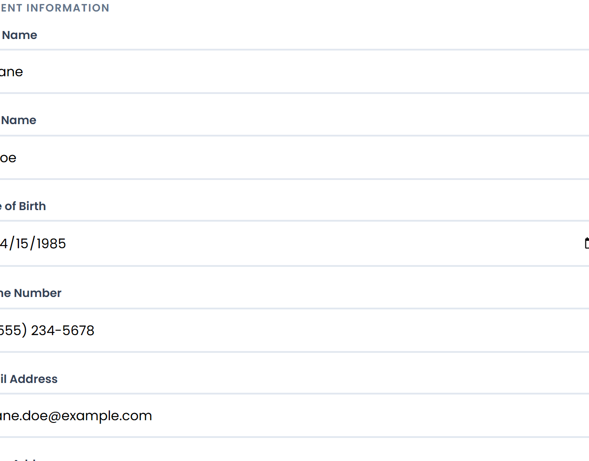
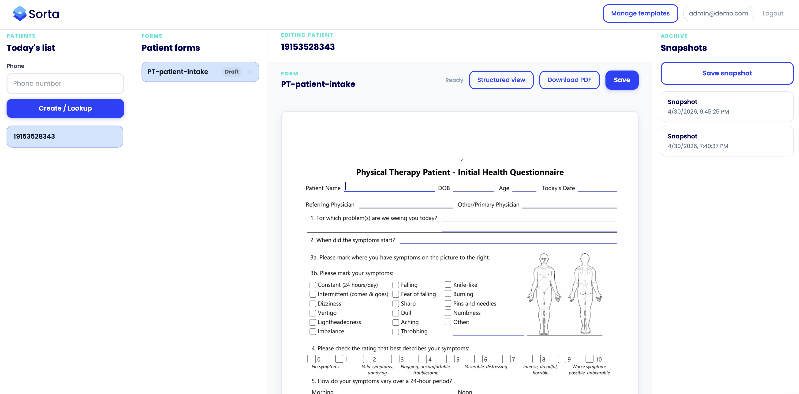
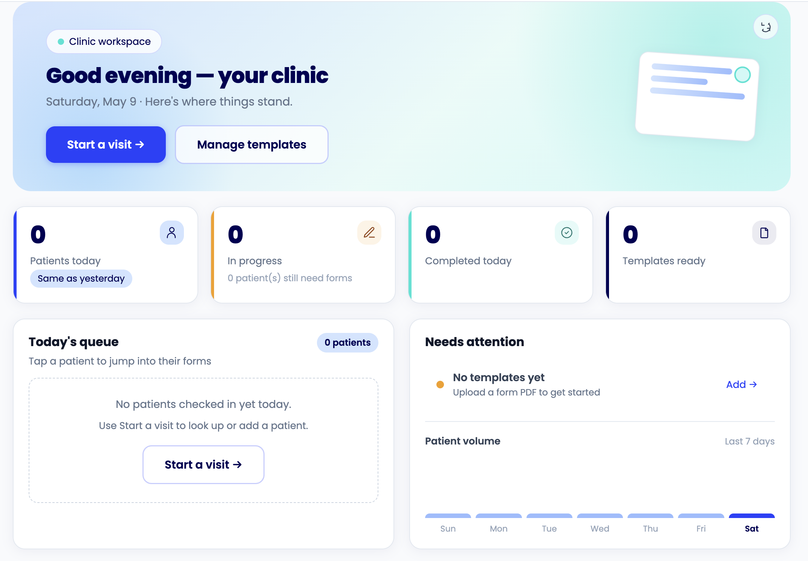
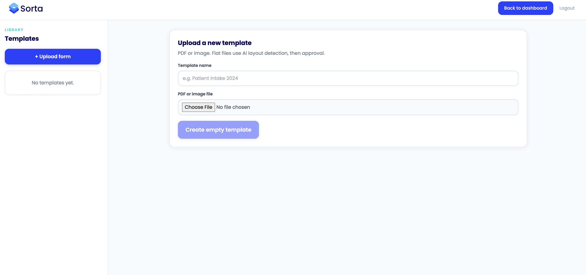
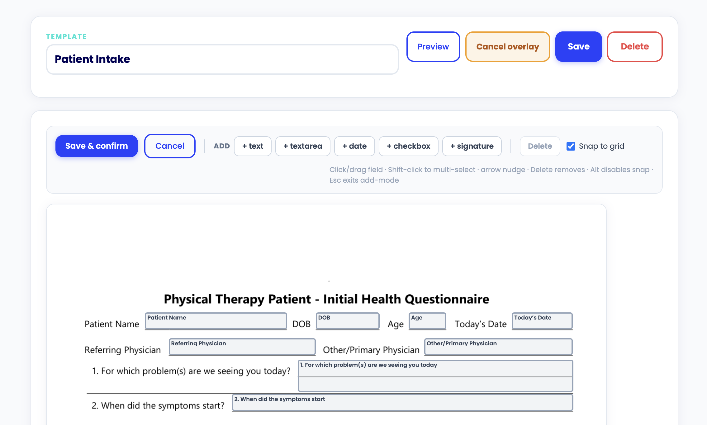

No new software to learn.
No migration.
Just less paperwork.
Sorta works on top of whatever your clinic already uses. Upload your existing forms once. Everything after that is automatic.
Three people. One goal: nobody retypes the same information twice.
patient
They fill it out before they arrive.
Before the appointment, staff sends the patient a link directly from Sorta. The patient fills out everything on their phone — name, DOB, insurance, medical history, whatever your forms ask for. Takes about five minutes. When they walk in, they're done. No clipboard. No pen. No sitting in the waiting room filling out the same form they filled out last time.

The patient link expires after 7 days and is single-use. Patients never create an account.
front desk
Patient walks in. Staff clicks sync. Every form fills itself.
The patient's answers are waiting in Sorta when they arrive. Staff opens the visit workspace, confirms the patient, and clicks sync. Every form in the packet — intake, consent, specialty questionnaires, insurance auth — populates simultaneously with the patient's information. Generate the PDFs. They come out clean, identical to your originals. Print and hand to the provider.

The sync is one click. We're building automatic sync on patient submission — it's on the roadmap.
patients
Confirm what changed. Nothing else.
When a patient comes back, their information from the last visit is already in Sorta. Staff sends a new link. The patient sees their existing data — insurance, address, emergency contact, medications — and updates anything that changed. Everything else is already there. No 12-page packet from scratch because they moved apartments.

What check-in looks like when patients arrive already done with the paperwork.
You set it up. We don't disappear after.
Most clinics are running their first patient within the first week of signing up.
Create your account
Log into Sorta from any browser. No download, no installation, no IT department. Works on Mac, Windows, tablet — anything with a browser.
Upload your forms
Drag your existing PDFs in directly. Intake packet, consent forms, specialty questionnaires — whatever you use. Don't change them. Don't redesign them. Upload them as-is.
AI maps the fields
Sorta reads every page and identifies every field automatically. Complex pages — family history tables, multi-column layouts — open in a drag-and-drop editor for a quick cleanup. Move fields into place, save it, locked forever. Nobody touches setup again.
Send your first patient link
Create a patient profile, hit send, and you're running. Most clinics go live within the same week they sign up.


What Sorta doesn't do.
We're a paperwork engine. That's it. No surprises.
Your EHR stays exactly as-is. Sorta lives outside it entirely.
We don't touch your appointment calendar.
RCM and billing stay in your existing system.
Documentation is yours. We handle the intake paperwork layer only.
The sync is one staff click right now. Automatic sync is on the roadmap.
Your workflow, your forms, your EHR — nothing changes.
Upload your existing forms once. Patient fills out intake on their phone. Staff clicks sync. Every PDF fills itself. That's the whole product.
Works for any outpatient specialty that deals with patient paperwork.
What check-in looks like when paperwork isn't slowing everything down.
You asked. We'll be straight with you.
Does the patient need to download an app?
No. The intake link opens in any mobile browser. No app, no account, no password. Just a link.
What happens if the patient doesn't fill out the forms before arriving?
Staff can enter the information directly in the visit workspace when they arrive. Same sync, same PDF output — just entered by staff instead of the patient.
Can I add new forms after setup?
Yes. Upload a new PDF anytime. AI maps it automatically. If it needs cleanup, the editor opens. You do it once and it's locked.
What if a form has checkboxes or Yes/No questions?
Sorta detects Yes/No patterns automatically and renders them as interactive toggles in the patient intake flow. The patient taps their answer. Sorta stamps the selection on the PDF.
How long does setup actually take?
A full 14-page intake packet takes a few hours — not a few minutes. Simple forms parse in seconds. Complex multi-column pages need a quick drag-and-drop cleanup in the editor. You do it once. Every patient after that is automatic.
See it with your actual forms.
We don't do generic demos. Send us your intake packet and we'll show you Sorta working with the real forms your clinic already uses.
Book a 15-minute demo$300/month flat. No contracts. Cancel anytime.